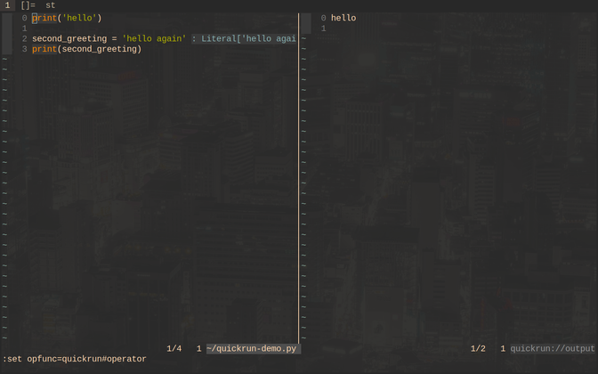
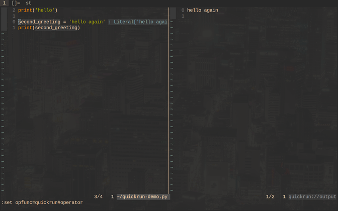
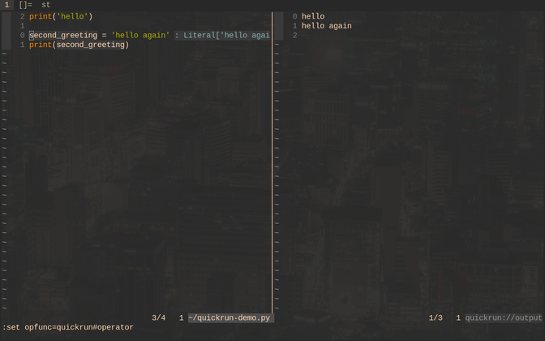

<
QUICK RUN:
(quickly run code from Vim, doesn't work well for large projects but it is
a good alternative for Jupyter Notebooks and it is good for learning code
languages, it also works with javascript)
Made by thinka
Watch Video
Run a single line of code - Hover over and press 'F9'

Run a single block of code - Hover over and press 'F9'
(the block of code will be executed providing there are no gaps between the lines of code)

Run the entire page - Press 'F10'

<